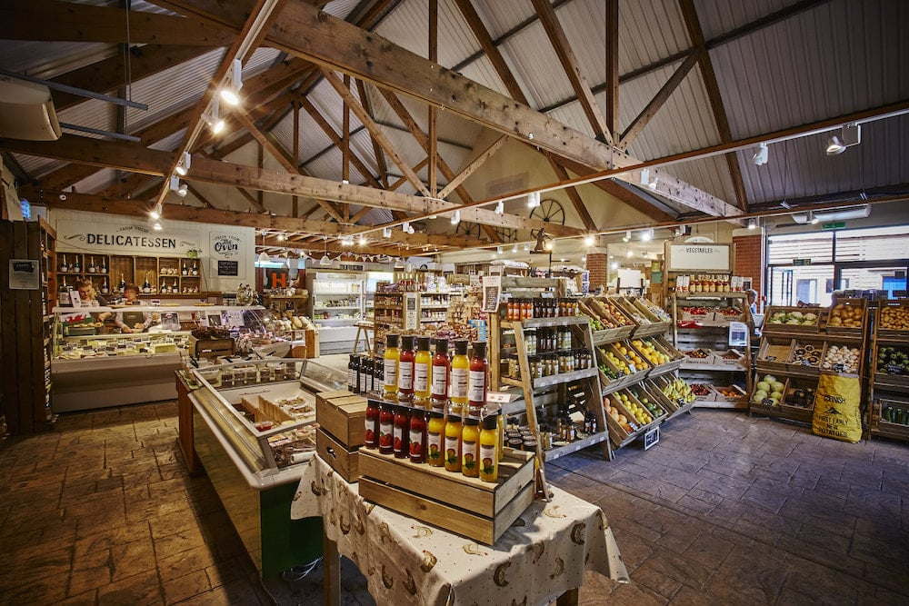

Discover the best of the farm at Ashkirk farms, where every product tells a story of quality and care. Our shop is stocked with fresh, seasonal produce, free-range eggs, artisanal goods, and handcrafted items sourced directly from our farm and local partners. From crisp vegetables and sweet jams to unique gifts and home essentials, there's something for everyone. Whether you're looking to bring home a taste of the countryside or find the perfect souvenir, Ashkirk farms offers a shopping experience rooted in sustainability and community.
